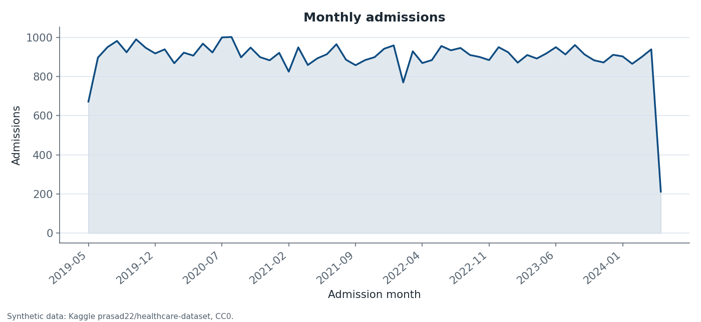
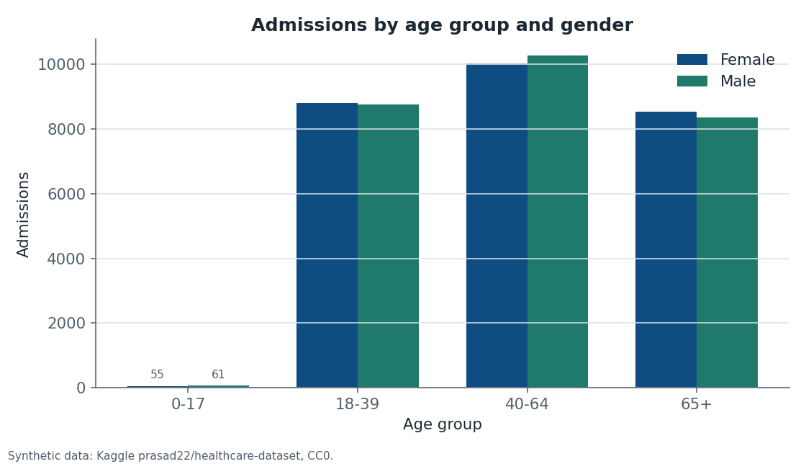
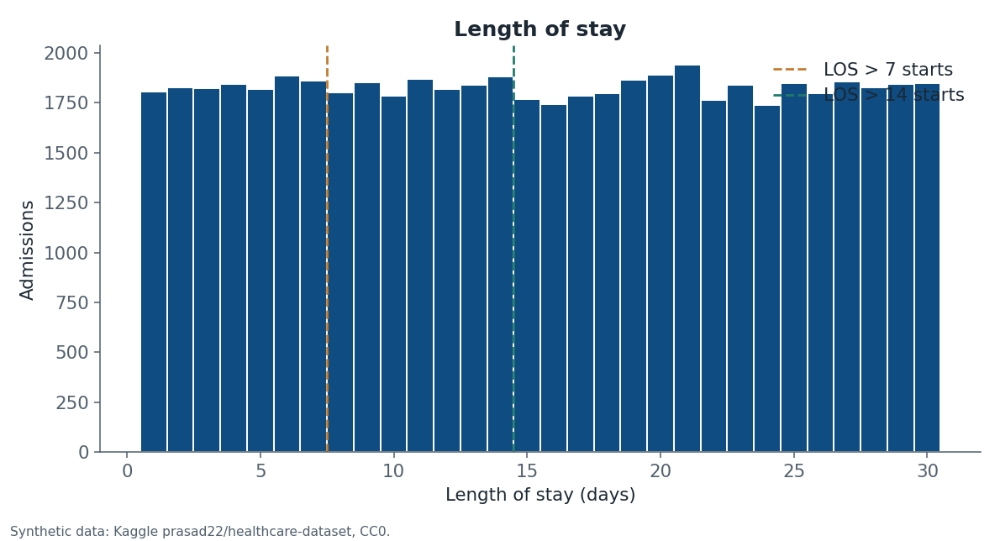
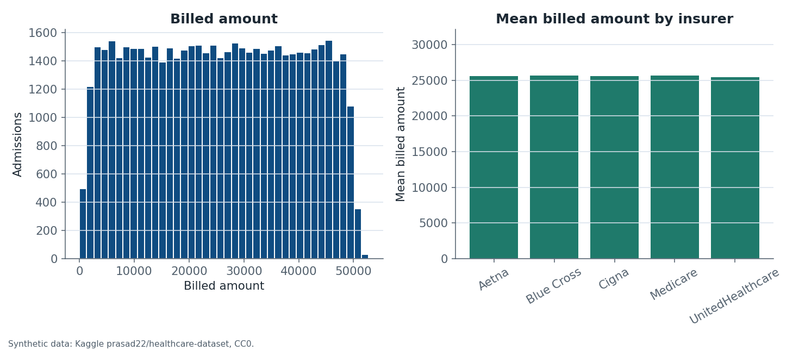
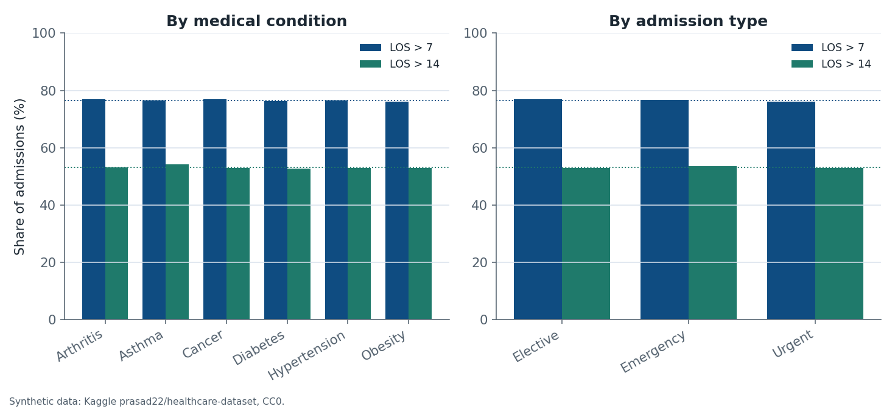
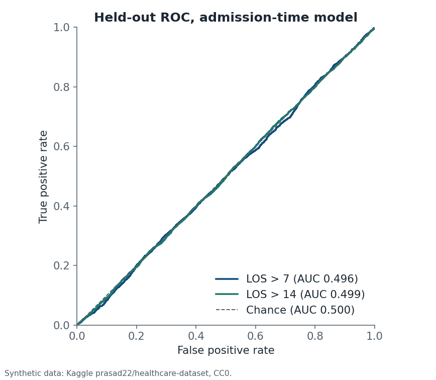

Independent project · Synthetic data
Hospital Operations and Patient Care Analytics
A cleaning, SQL, charting, and classification workflow on a public hospital-admissions file. Python and Pandas prepare the table. SQL writes the summaries. Scikit-learn fits a prolonged-stay logistic regression, and Streamlit can open the saved aggregates.
This dataset is synthetic. The Kaggle author states that it was generated with Python’s Faker library and contains no real patient information. Nothing on this page is a clinical recommendation, a bed-demand estimate, or a description of a real hospital.
Overview
The cleaned cohort has 54,860 admissions from 8 May 2019 through 7 May 2024, across 61 calendar months. Mean length of stay is 15.50 days and the median is 15.00 days. Observed stays run from 1 to 30 days. Mean age is 51.53 years, with observed ages from 13 to 89.
Category mixes are close to even. Gender shares run from 49.97% to 50.03%. Admission type, weekday, condition label, blood type, medication, and test-result shares each sit within a fraction of a percentage point of an equal split. Age is the exception: the tails are thin.
These measurements describe the synthetic file. They do not estimate bed demand, payment integrity, or clinical risk.
Dataset
The file is version 2 of Prasad Patil’s Kaggle dataset Healthcare Dataset (prasad22/healthcare-dataset). Kaggle lists the license as CC0: Public Domain. The author’s description says the records were generated with Python’s Faker library and contain no real patient information.
The Kaggle file card still says the CSV contains 10,000 records. The downloaded version 2 file contains 55,500 rows and 15 columns. This analysis uses that measured file. The raw CSV is not published with this page. Patient names, doctor names, hospital names, and room numbers are dropped before the analysis table is written. Doctor and hospital labels are nearly row-unique, so they are not treated as a stable provider panel.
Citation: Patil, P. Healthcare Dataset (Version 2) [Data set]. Kaggle. https://www.kaggle.com/datasets/prasad22/healthcare-dataset
Cleaning
The raw file had no missing values. Cleaning kept a row only when the age and dates were valid, billed amount was present and not negative, and the category fields were not blank.
| Check | Result |
|---|---|
| Raw rows | 55,500 |
| Exact duplicate rows removed | 534 |
| Invalid age removed | 0 |
| Invalid dates removed | 0 |
| Negative or missing billed amounts removed | 106 |
| Blank categories removed | 0 |
| Rows retained | 54,860 |
Negative billed amounts were removed rather than interpreted. Exact duplicate rows were removed. Names are not used as an analysis key.
Patient demographics
Age groups in the cleaned cohort are 0–17 (116 admissions, 0.21%), 18–39 (17,561, 32.01%), 40–64 (20,294, 36.99%), and 65+ (16,889, 30.79%). Mean length of stay by age group runs only from 15.32 to 15.58 days. The share of stays longer than 7 days by age group runs from 76.34% to 76.87%.
The most common age is 38, with 890 admissions. The least common ages are at the tails: 89 (8 admissions), 13 (14), and 14 (18). Pearson correlation between age and length of stay is 0.0080.
Condition labels have six levels, from 16.55% to 16.78% of admissions. Blood types have eight levels, from 12.37% to 12.54%. Gender is split about evenly. With tens of thousands of rows, a chi-square test can still reject an exact equal mix. The percentage-point gap is the useful description.
Admissions and hospital stays
Monthly volume averages 899 admissions. Interior months range from 770 in February 2022 to 1,002 in August 2020. May 2019, the first partial month, has 672 admissions, and May 2024, the last partial month, has 212. The fitted slope across all months is −1.25 admissions per month.
Admission-type shares run from 32.94% to 33.61%. Weekday shares run from 14.15% to 14.39%. Mean stay by condition spans 15.43 to 15.68 days, and the share longer than 7 days by condition spans 76.03% to 77.03%. By admission type, mean stay spans 15.41 to 15.58 days.
A discrete uniform distribution on days 1 through 30 would put about 76.7% of stays above 7 days and 50% above 14 days. The measured shares, 76.55% and 53.13%, are close to those reference values. Against an equal count for every integer day from 1 to 30, the largest gap is 0.20 percentage points.
Billing and insurance
The source does not name a currency, so billed amounts are reported as recorded numbers, not as dollars or another unit. After removing 106 negative amounts, retained values run from 9.24 to 52,764.28. The mean is 25,594.63. The midpoint of the observed minimum and maximum is 26,386.76.
Insurer mean billed amounts span only 219.20, from 25,458.89 to 25,678.09. The insurer mix has five levels, from 19.68% to 20.26%. Pearson correlation between billed amount and length of stay is −0.0048. Medication labels have five levels, from 19.93% to 20.08%. Test-result labels have three levels, from 33.10% to 33.54%.
Machine learning experiment
Two labels were fixed before fitting: length of stay greater than 7 days, and length of stay greater than 14 days. The cuts were not chosen to maximize test AUC. Stay length in this file runs from 1 to 30 days in nearly equal counts, so the 7-day rule marks a large majority of rows and a majority-class rule is a strong accuracy baseline.
The classifier is an unweighted logistic regression inside a scikit-learn pipeline. Age is scaled, and the categorical fields are one-hot encoded, with the encoder fit on the training split only. The split is stratified, 80/20, with random_state=42. A class-weighted logistic regression is a pre-specified sensitivity check on the same split. It was not used to pick a winner after seeing the test set.
Admission-time features are age, gender, blood type, medical condition, admission type, insurance provider, admission month, and admission weekday. Length of stay, both dates, billed amount, medication, test result, and identifier fields are excluded so they cannot define or leak the label. The largest Cramér’s V with the 7-day label is 0.0140, for admission month. A value under 0.05 is a negligible association.
Held-out results
Each split has 43,888 training rows and 10,972 test rows. For stays longer than 7 days, the positive rate is 76.55% in training and 76.56% in test. For stays longer than 14 days, the positive rate is 53.13% in both splits.
| Label | Accuracy | Majority-class accuracy | ROC-AUC | 95% interval |
|---|---|---|---|---|
| Stay > 7 days | 76.6% | 76.6% | 0.496 | 0.484 to 0.509 |
| Stay > 14 days | 53.0% | 53.1% | 0.499 | 0.489 to 0.509 |
Both ROC-AUC values sit at chance, and both 95% bootstrap intervals include 0.500. On the 7-day label, unweighted accuracy matches the majority-class accuracy. The unweighted model at probability 0.5 classifies essentially every 7-day test row as a long stay: 0 true negatives, 2,572 false positives, 0 false negatives, and 8,400 true positives. The class-weighted check has the same ROC-AUC, 0.496, and accuracy falls to 50.2%.
On the 14-day label, unweighted accuracy is 0.12 percentage points below the majority class. Its ROC-AUC is 0.499, and the class-weighted check has the same ROC-AUC. Train five-fold ROC-AUC is 0.497 for the 7-day label and 0.500 for the 14-day label.
The models did not outperform chance discrimination. They are not validated clinical predictors, and they are not a useful synthetic benchmark of predictive skill. One stratified split and training-set cross-validation are not an external validation. The ROC-AUC interval resamples the held-out predictions. It does not refit the model on each draw.
Visualizations
These six charts were produced by the pipeline. Each one is labeled as synthetic data from the Kaggle file.






Limitations
- The publisher describes the file as synthetic Faker output. It is not an extract from a hospital information system, and it is not real clinical patient data.
- No currency unit, geography, or care setting is defined beyond the column names.
- Negative billed amounts were removed rather than interpreted.
- The labels called medical condition, insurer, medication, and test result behave like assigned categories. Doctor and hospital fields do not identify a usable panel.
- Medication and test result were kept out of the classifier because the file does not say they were known at admission.
- A different stay threshold would change the positive rate. The two reported cuts were pre-specified. Other cuts were not searched.
- The ROC-AUC values, 0.496 and 0.499, do not outperform chance. The models are not validated clinical predictors.
The downloadable archive contains the Python package, SQL scripts, Streamlit app, tests, requirements, and reproduction instructions. It does not contain the raw CSV, generated databases, or patient-level records.